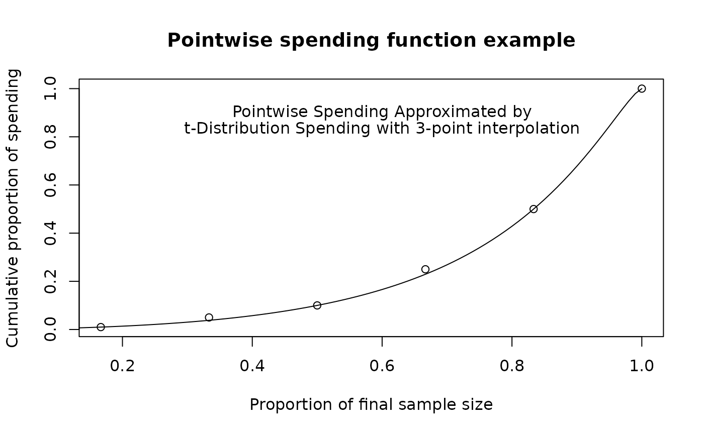

sfPoints.RdThe function sfPoints implements a spending function with values
specified for an arbitrary set of specified points. It is now recommended to
use sfLinear rather than sfPoints. Normally sfPoints will be passed
to gsDesign in the parameter sfu for the upper bound or
sfl for the lower bound to specify a spending function family for a
design. In this case, the user does not need to know the calling sequence,
just the points they wish to specify. If using sfPoints() in a
design, it is recommended to specify how to interpolate between the
specified points (e.g,, linear interpolation); also consider fitting smooth
spending functions; see Spending_Function_Overview.
sfPoints(alpha, t, param)
| alpha | Real value \(> 0\) and no more than 1. Normally,
|
|---|---|
| t | A vector of points with increasing values from >0 and <=1. Values of the proportion of sample size/information for which the spending function will be computed. |
| param | A vector of the same length as |
An object of type spendfn. See spending functions for further
details.
The manual is not linked to this help file, but is available in library/gsdesign/doc/gsDesignManual.pdf in the directory where R is installed.
Jennison C and Turnbull BW (2000), Group Sequential Methods with Applications to Clinical Trials. Boca Raton: Chapman and Hall.
library(ggplot2) # example to specify spending on a pointwise basis x <- gsDesign( k = 6, sfu = sfPoints, sfupar = c(.01, .05, .1, .25, .5, 1), test.type = 2 ) x#> Symmetric two-sided group sequential design with #> 90 % power and 2.5 % Type I Error. #> Spending computations assume trial stops #> if a bound is crossed. #> #> Sample #> Size #> Analysis Ratio* Z Nominal p Spend #> 1 0.171 3.48 0.0002 0.0002 #> 2 0.342 3.07 0.0011 0.0010 #> 3 0.512 2.94 0.0017 0.0013 #> 4 0.683 2.58 0.0050 0.0038 #> 5 0.854 2.33 0.0099 0.0062 #> 6 1.025 2.03 0.0211 0.0125 #> Total 0.0250 #> #> ++ alpha spending: #> User-specified spending function with Points = 0.01 0.05 0.1 0.25 0.5 1. #> * Sample size ratio compared to fixed design with no interim #> #> Boundary crossing probabilities and expected sample size #> assume any cross stops the trial #> #> Upper boundary (power or Type I Error) #> Analysis #> Theta 1 2 3 4 5 6 Total E{N} #> 0.0000 0.0002 0.0010 0.0013 0.0038 0.0063 0.0125 0.025 1.0171 #> 3.2415 0.0161 0.1072 0.1626 0.2666 0.2066 0.1409 0.900 0.7282 #> #> Lower boundary (futility or Type II Error) #> Analysis #> Theta 1 2 3 4 5 6 Total #> 0.0000 2e-04 0.001 0.0013 0.0038 0.0063 0.0125 0.025 #> 3.2415 0e+00 0.000 0.0000 0.0000 0.0000 0.0000 0.000# get proportion of upper spending under null hypothesis # at each analysis y <- x$upper$prob[, 1] / .025 # change to cumulative proportion of spending for (i in 2:length(y)) y[i] <- y[i - 1] + y[i] # this should correspond to input sfupar round(y, 6)#> [1] 0.01 0.05 0.10 0.25 0.50 1.00# plot these cumulative spending points plot(1:6 / 6, y, main = "Pointwise spending function example", xlab = "Proportion of final sample size", ylab = "Cumulative proportion of spending", type = "p" )# approximate this with a t-distribution spending function # by fitting 3 points tx <- 0:100 / 100 lines(tx, sfTDist(1, tx, c(c(1, 3, 5) / 6, .01, .1, .5))$spend)# example without lower spending at initial interim or # upper spending at last interim x <- gsDesign( k = 3, sfu = sfPoints, sfupar = c(.25, .25), sfl = sfPoints, sflpar = c(0, .25) ) x#> Asymmetric two-sided group sequential design with #> 90 % power and 2.5 % Type I Error. #> Upper bound spending computations assume #> trial continues if lower bound is crossed. #> #> Sample #> Size ----Lower bounds---- ----Upper bounds----- #> Analysis Ratio* Z Nominal p Spend+ Z Nominal p Spend++ #> 1 0.351 -20.00 0.0000 0.000 2.50 0.0063 0.0062 #> 2 0.703 0.76 0.7758 0.025 20.00 0.0000 0.0000 #> 3 1.054 2.04 0.9793 0.075 2.04 0.0207 0.0188 #> Total 0.1000 0.0250 #> + lower bound beta spending (under H1): #> User-specified spending function with Points = 0 0.25 1. #> ++ alpha spending: #> User-specified spending function with Points = 0.25 0.25 1. #> * Sample size ratio compared to fixed design with no interim #> #> Boundary crossing probabilities and expected sample size #> assume any cross stops the trial #> #> Upper boundary (power or Type I Error) #> Analysis #> Theta 1 2 3 Total E{N} #> 0.0000 0.0063 0 0.0182 0.0245 0.7773 #> 3.2415 0.2822 0 0.6178 0.9000 0.8470 #> #> Lower boundary (futility or Type II Error) #> Analysis #> Theta 1 2 3 Total #> 0.0000 0 0.7755 0.2001 0.9755 #> 3.2415 0 0.0250 0.0750 0.1000